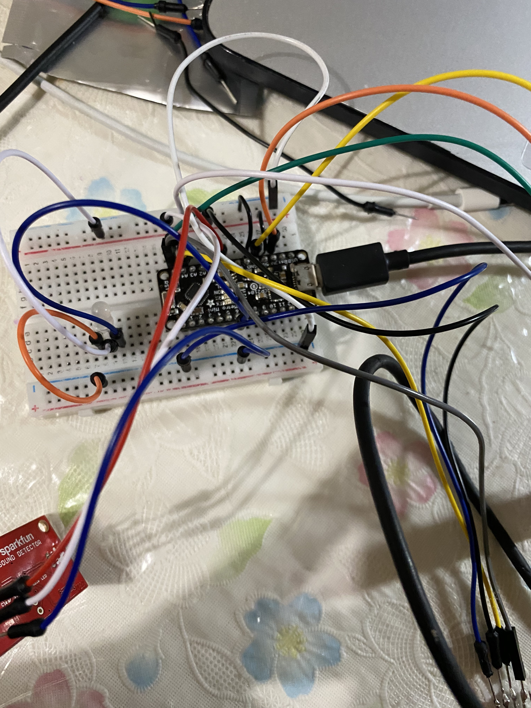

Monica Munoz[home]
FINAL
Proposal
Since my theme for the prototype is about comfort and children aspects during quarantine, I will continue with the same idea for the final.I plan to continue the MOhardware route and add a neopixel and have the other three parts(sound,distance,oled) play together to form a nice ambience for the player/viewer. Additionally, I will use the same enclosure- unicorn stuffed animal and attach the neopixel where the nose belongs. I think that this gives it a nice balance of color and visual effects. Lastly, I will add a video that shows a child interacting with it.
Final Project
This project is meant to experience therapeudic moods. Being in quarantine can be very stressful and for some people, it can affect mental health. I think that interacting with a mood toy can be very beneficial for children, especially at a time like this.
[ FINAL CODE ]
SHORT CLIPS OF HOW IT WORKS WITHOUT ENCLOSURE



Final Videos- how to use
In this video, I have a little model playing with the final toy.
BLUE - STAY CALM, GREEN - RELAX, RED - BREATHE
After working with the code for some time, I was not able to fix the wording- some words have the last letter repeated. Also, my sound detector is extremly sensitive- it picks up every little sound which can be seen in some of my videos.